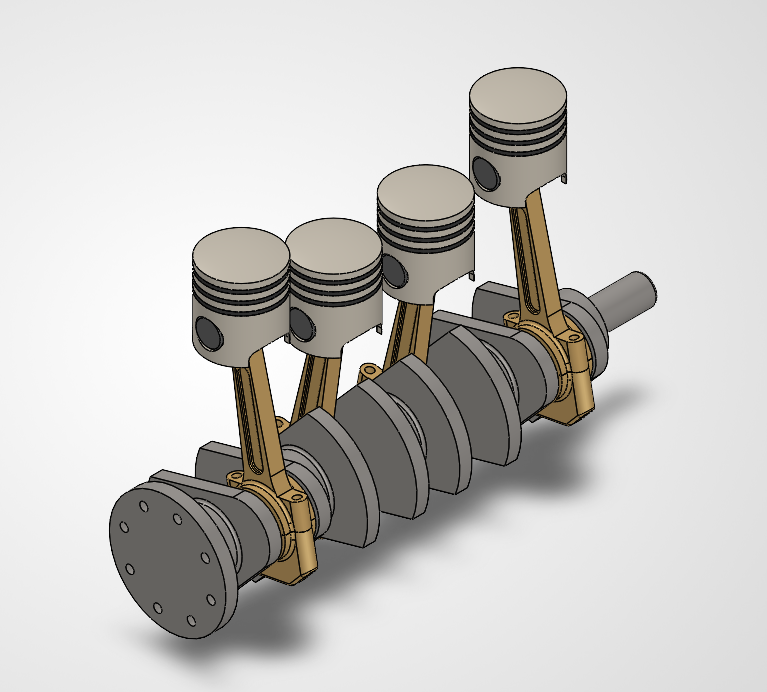
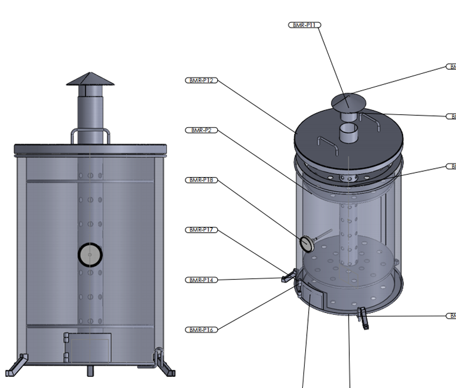
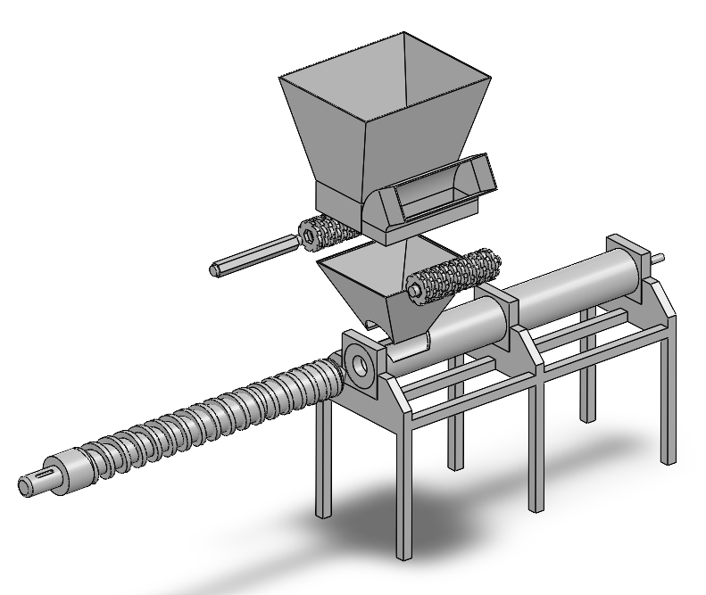

About
Mechanical Engineering, BSc · Expected 2027
Dedan Kimathi University of Technology
I'm a mechanical engineering student building toward a career in design, simulation, and manufacturing. My work spans hydraulic and thermofluid system design — including complete hydraulic dimensioning for a 10 kW crossflow turbine — through to hands-on CNC machining, foundry and casting quality control, and structural welding, developed across industrial attachments at Numerical Machining Complex and Associated Motors Limited.
I approach every design the same way: parametric CAD in SolidWorks and Autodesk Inventor, validated through CFD in Ansys Fluent and FEA in Ansys Workbench, and where relevant, verified against physical fabrication constraints — because a design that can't be machined, cast, or welded to spec isn't finished. My coursework at DeKUT reflects that same breadth: mechanics of machines and structural mechanics, thermodynamics and fluid mechanics with hydraulic and turbomachinery design, and statistical design of experiments in MATLAB and Minitab.
Alongside mechanical work, I maintain a secondary technical skillset in software and cybersecurity — Python, C/C++, Flutter/Dart, SQL, and Cisco-certified ethical hacking fundamentals — which I apply to data analysis, automation, and understanding the digital systems increasingly embedded in mechanical equipment.
-
Feb 2026
Top Academic Performer — Mechanical EngineeringBest Student, 1st, 2nd & 3rd Year — 3 University Certificates of Merit View Certificates
-
2022–27
BSc Mechanical EngineeringDedan Kimathi University of Technology, Nyeri (Expected 2027)
-
Sep 2026
Certified SOLIDWORKS Professional (CSWP)Dassault Systèmes View Certificate
-
Sep 2026
Certified SOLIDWORKS Associate (CSWA)Dassault Systèmes View Certificate
-
Sep 2026
Certified SOLIDWORKS Associate - Simulation (CSWA-S)Dassault Systèmes · 2024 View Certificate
-
2024
Software & Web DevelopmentPower Learn Project · May–Sep 2024 View Certificate
-
2018–22
KCSE — Kenya Certificate of Secondary EducationSigalame Boys High School, Busia
Projects
Thermofluid systems, manufacturing,
and applied engineering research
Energy Systems & Thermofluids

10 kW Crossflow Turbine
Complete hydraulic dimensioning and structural design of a 10 kW crossflow turbine sized for deployment on Kenyan rivers — covering runner geometry, nozzle sizing, and casing structural analysis.

Biogas Generator Conversion
Mechanical conversion of a gasoline engine into a 4 kW biogas-fueled power generation system, addressing fuel delivery, compression ratio, and combustion chamber modifications for biogas operation.
In progress
Enriched Biomass Briquettes
Experimental research analyzing combustion kinetics and thermal dynamics of enriched biomass briquettes, using OriginPro for data analysis and curve fitting.
In progressSustainable Design

Re-Block Extruder
Project proposal for an extruder machine that produces paving blocks from recycled plastic and sand, targeting plastic-waste reduction and low-cost construction material production.
Proposal Stage
Maize Cob Crusher & Compactor
Designed a maize cob crusher and compactor to process crop residue into a densified, usable output, sizing the crushing mechanism and compaction chamber for the required throughput and structural load.
Mechanical Design & Simulation
7:1 Speed Reducer Gearbox
Designed a 7:1 speed-reduction gearbox using a compound reverted helical geartrain, sizing gear ratios, module, and face width for the required torque and speed reduction. Verified gear tooth stress and shaft deflection through simulation, alongside bearing selection and shaft layout for the coaxial (reverted) configuration.

Prosthetic Leg Design
Designed a lower-limb prosthetic leg, modeling the socket, pylon, and joint assembly in CAD and evaluating structural strength under simulated gait loading to balance durability with weight.

Flow Simulation in a Designed Tank
Modeled a process tank in SolidWorks and ran Flow Simulation to evaluate internal flow patterns, velocity distribution, and pressure drop, using the results to inform inlet/outlet placement and internal geometry.

Heat Sink Simulation
Simulated the thermal performance of a heat sink design, analyzing fin geometry and airflow to evaluate heat dissipation and surface temperature distribution under a defined thermal load.
Experience
Industrial attachments across manufacturing,
automotive, and academic workshops
Nairobi, Kenya
Mechanical Engineering Attaché
Numerical Machining Complex (NMC)- Programmed and operated multi-axis CNC machines (MAHO, Haas) using G&M code for precision part production.
- Supported foundry and casting operations, performing metallurgical quality control on cast components.
- Carried out structural welding (SMAW/MIG/TIG) and supported hot-dip galvanizing processes for corrosion protection.
- CAD/CAM integration in manufacturing through reverse engineering.
Nairobi, Kenya
Mechanical Engineering Attaché
Associated Motors Limited, Isuzu- Diagnosed electromechanical faults across heavy and light motor vehicle units.
- Carried out servicing and preventive maintenance on a mixed fleet of commercial and passenger vehicles.
- Conducted Pre-Delivery Inspections (PDI) to verify vehicles met manufacturer specification before handover.
Nyeri, Kenya
Mechanical Engineering Attaché
Dedan Kimathi University of Technology — Mechanical Workshop- Supported workshop production activities, including component fabrication and machine setup.
- Carried out the core manufacturing processes (turning, milling, grinding, welding, shaping) using both conventional and CNC machining processes.
- Applied CAD/CAM workflows to optimize part designs and machining sequences.
- Performed routine maintenance and servicing of workshop equipment and machine tools.
Software & Digital Tools
Engineering software I use daily,
plus tools I explore on the side
SolidWorks
Parametric CAD, assembly design & engineering drafting — Certified Professional (CSWP) & Associate (CSWA).
Autodesk Inventor
3D mechanical design and CAD/CAM integration for manufacturing-ready parts.
AutoCAD
2D & 3D drafting and technical documentation.
ANSYS
CFD (Fluent, ICEM CFD) and FEA (Workbench) for flow, stress & thermal simulation.
MATLAB
Numerical analysis, control systems modeling, and engineering scripting.
Minitab
Design of Experiments (DoE) and ANOVA for statistical process analysis.
On the side: I dabble in cybersecurity as a hobby - Cisco-certified in Ethical Hacking, comfortable in Kali Linux, and building small tools in Python, C/C++, SQL, and Flutter/Dart when taking a break from engineering.
Skills
Engineering & CAD/CAE
- SolidWorks (CSWP/CSWA/CSWA-S)
- Autodesk Inventor
- AutoCAD (2D/3D)
- Ansys
- MATLAB
- Minitab
- OriginPro
Manufacturing & Fabrication
- Multi-Axis CNC (MAHO / Haas)
- Foundry & Casting
- Metallurgical QC
- Hot-Dip Galvanizing
- SMAW / MIG / TIG Welding
Diagnostics & Automotive
- Electromechanical Diagnostics
- Heavy & Light Unit Servicing
- Pre-Delivery Inspection (PDI)
Software & Cyber (Secondary)
- Python
- Arduino
- C/C++
- Flutter / Dart
- SQL
- Kali Linux
Let's engineer
something reliable.
Open to opportunities in mechanical design, thermofluid systems, manufacturing, and applied engineering research - or a conversation about turbines, CNC, or CFD.